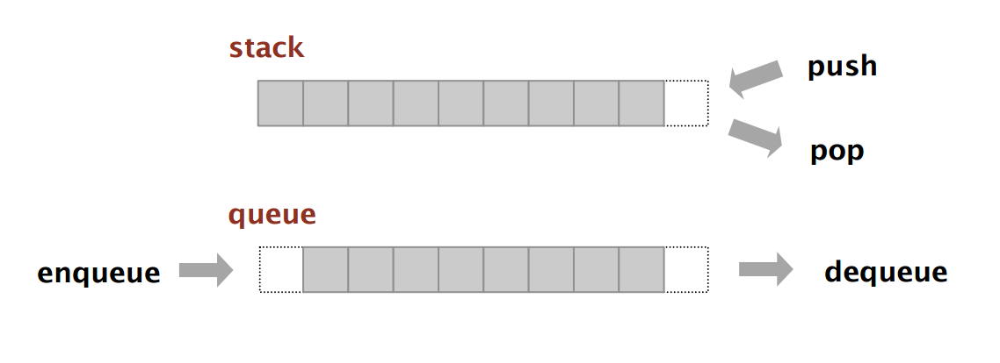

Data Structures
Meets
Logging
Data Structures 101
Day 1
Stacks
- One of the first data structures you learn about
- Two general operations:
pushandpop - LIFO: Last In, First Out
Analogy


Comparison: FIFO Queue
- FIFO: First In, First Out
- Example: Waiting in a line

A Logging Problem
Requirements
- Automatically log metrics associated with tasks
- Allow users to extend metrics on per task basis
- Compatibility with Azure Log Analytics
- Lightweight for end users
First Idea: Use a Decorator!
- Specify standard metrics in decorator code
- Handle Azure compatibility in decorator code
- Easy for end users to apply to their code
Code Example
# run the task and record time
start_time = datetime.now()
try:
wrapped_func(*args, **kwargs)
error = None
except Exception as e:
error = e
end_time = datetime.now()
# create a metrics dictionary and log it
metrics_dict = {}
metrics_dict["duration"] = (end_time - start_time).total_seconds()
metrics_dict["job_name"] = job_name
if error is not None:
metrics_dict["failed"] = True
logging.info(f"log_metrics: {json.dumps(metrics_dict)}")
What about custom metrics?
- Wanted to extensibility of standard metrics
- Users have no access to
metrics_dict - Idea: Attach
metrics_dictto decorated object
# add a metrics dictionary to the task
self._metrics_dict = {}
# run the task and record time
start_time = datetime.now()
try:
wrapped_func(*args, **kwargs)
error = None
except Exception as e:
error = e
end_time = datetime.now()
# Add standard metrics and log the result
self._metrics_dict["duration"] = (end_time - start_time).total_seconds()
self._metrics_dict["job_name"] = job_name
if error is not None:
self._metrics_dict["failed"] = True
logging.info(f"log_metrics: {json.dumps(self._metrics_dict)}")
def add_to_metrics_dict(self, new_metrics_dict):
"""
Add custom metrics to the current logging metrics dictionary.
Parameters
----------
self : object
Instance of the object - should be `self` in most cases.
new_metrics_dict : dict
Dictionary of metrics add to the current logging metrics dictionary
"""
self.metrics_dict.update(new_metrics_dict)

Nesting
- Nested calls to methods on the same object
- Dictionary from original method gets overwritten

class SomeTask:
def run(self):
self.foo()
@log_task_metrics
def foo(self):
add_to_metrics_dict(self, {"custom_foo": "foo"})
self.bar()
@log_task_metrics
def bar(self):
add_to_metrics_dict(self, {"custom_bar": "bar"})
Stacks!
Idea: Use a stack of dictionaries
- Push a dict to the stack when entering the decorator
- Pop a dict from the stack when exiting the decorator
# add a new metrics dictonary stack so we don't run into issues with nested logs, creating the stack if needed
if not hasattr(self, "_logging_metrics"):
self._logging_metrics = LifoQueue()
self._logging_metrics.put({})
# run the task and record time
start_time = datetime.now()
try:
wrapped_func(*args, **kwargs)
error = None
except Exception as e:
error = e
end_time = datetime.now()
# get the metrics dictionary from the stack and add metrics to it
metrics_dict = self._logging_metrics.get()
metrics_dict["duration"] = (end_time - start_time).total_seconds()
metrics_dict["job_name"] = job_name
if error is not None:
metrics_dict["failed"] = True
logging.info(f"log_metrics: {json.dumps(metrics_dict)}")
def add_to_metrics_dict(self, new_metrics_dict):
"""
Add custom metrics to the current logging metrics dictionary.
Parameters
----------
self : object
Instance of the object - should be `self` in most cases.
new_metrics_dict : dict
Dictionary of metrics add to the current logging metrics dictionary
"""
current_metrics_dict = self._logging_metrics.get()
current_metrics_dict.update(new_metrics_dict)
self._logging_metrics.put(current_metrics_dict)
class SomeTask:
def run(self):
self.foo()
@log_task_metrics
def foo(self):
add_to_metrics_dict(self, {"custom_foo": "foo"})
self.bar()
@log_task_metrics
def bar(self):
add_to_metrics_dict(self, {"custom_bar": "bar"})
Problem Solved!


What about concurrency?
Concurrency
- Want to run multiple logged tasks at the same time
- Order of the metrics dicts can get swapped
- Everything gets messed up
from concurrent.futures import ThreadPoolExecutor
class SomeTask:
def run(self):
with ThreadPoolExecutor() as executor:
future_foo = executor.submit(self.foo)
future_bar = executor.submit(self.bar)
future_foo.result()
future_bar.result()
@log_task_metrics
def foo(self):
add_to_metrics_dict(self, {"custom_foo": "foo"})
sleep(2)
@log_task_metrics
def bar(self):
add_to_metrics_dict(self, {"custom_bar": "bar"})
sleep(3)
What's the fix?
Don't support concurrency!